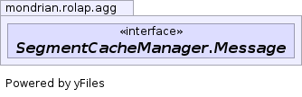

JavaScript is disabled on your browser.
Overview
Package
Class
Tree
Deprecated
Index
Help
Prev Class
Next Class
Frames
No Frames
All Classes
Summary:
Nested |
Field |
Constr |
Method
Detail:
Field |
Constr |
Method
mondrian.rolap.agg
Interface SegmentCacheManager.Message
All Known Subinterfaces:
SegmentCacheManager.Command
<T>
All Known Implementing Classes:
BatchLoader.LoadBatchCommand
,
SegmentCacheManager.FlushCommand
Enclosing class:
SegmentCacheManager
static interface
SegmentCacheManager.Message

Overview
Package
Class
Tree
Deprecated
Index
Help
Prev Class
Next Class
Frames
No Frames
All Classes
Summary:
Nested |
Field |
Constr |
Method
Detail:
Field |
Constr |
Method